Discover the rich flavors of Korean cuisine — from traditional meals to modern street food!
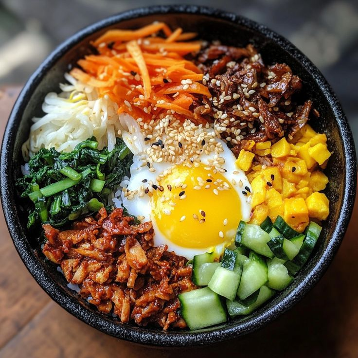
Rice mixed with veggies and chili paste.
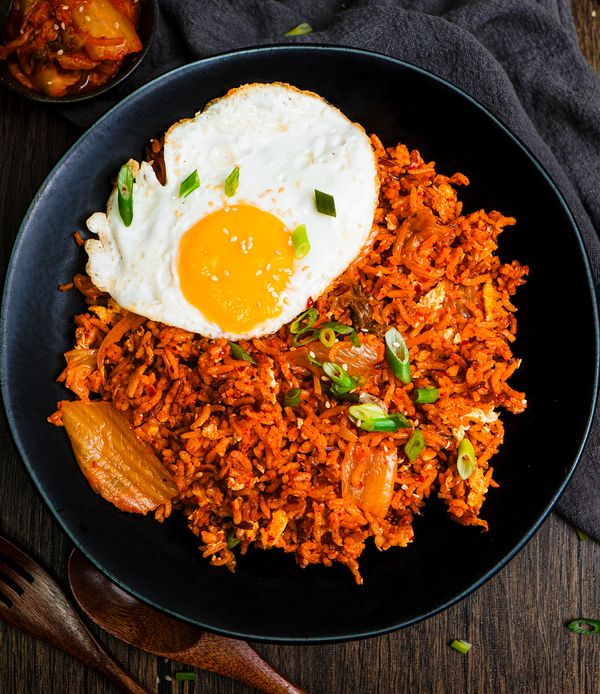
Fried rice with kimchi and egg — simple yet full of flavor.
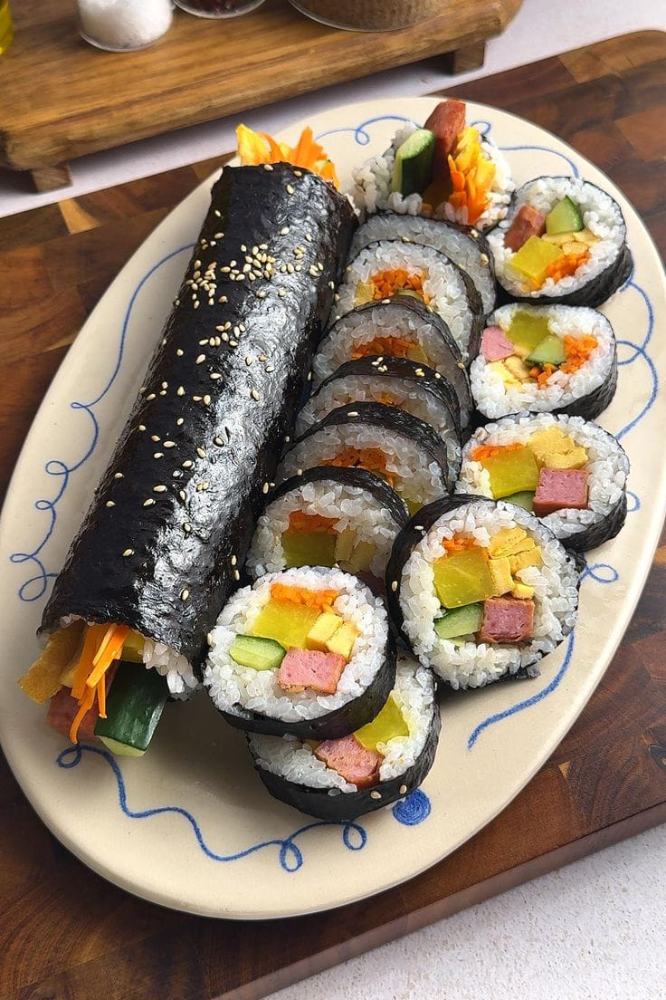
Rice and fillings rolled in seaweed — Korea’s favorite snack.
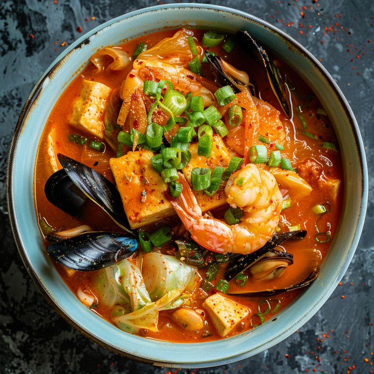
Spicy kimchi stew with tofu and pork — warm and comforting.
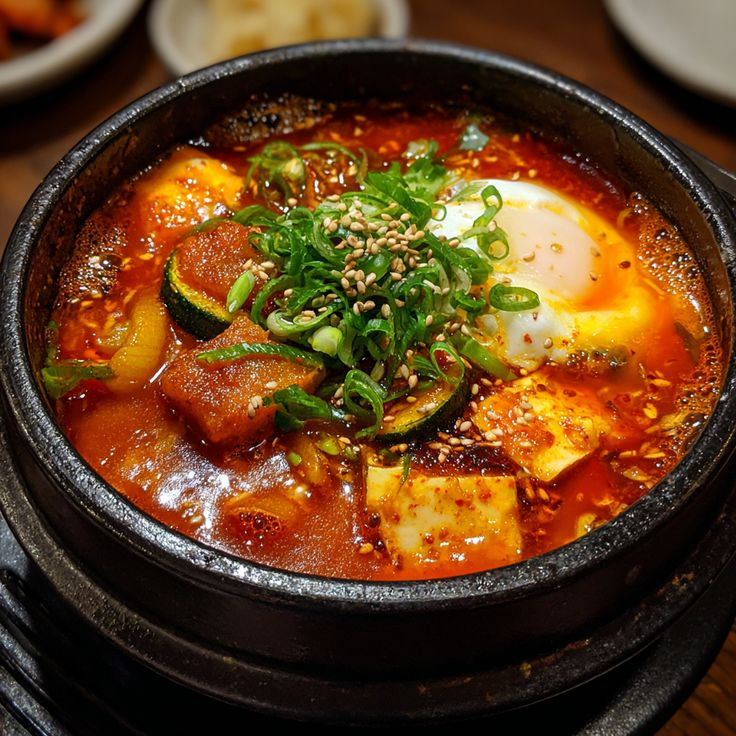
Soft tofu stew with seafood — spicy and silky smooth.
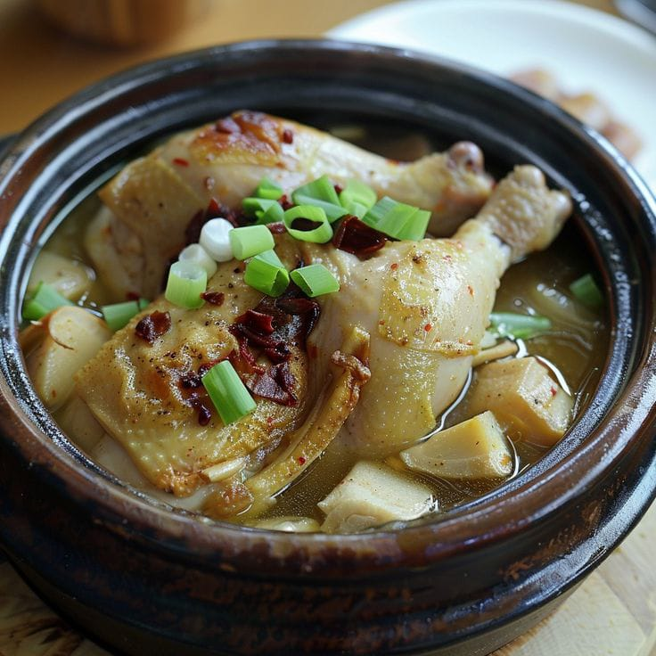
Ginseng chicken soup — a summer health booster.
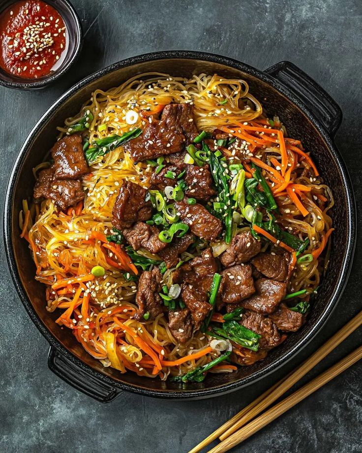
Stir-fried glass noodles with vegetables and soy flavor.
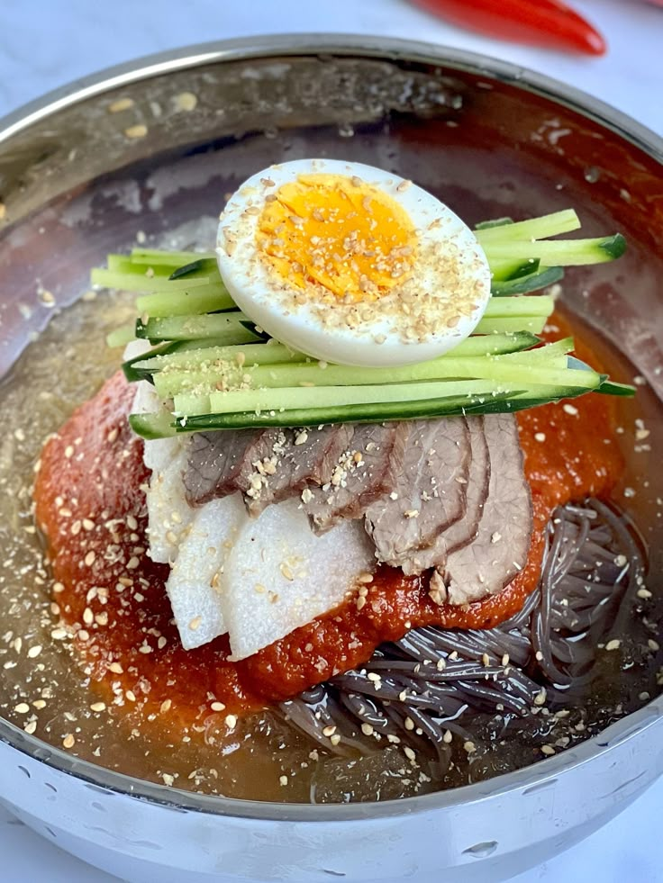
Cold buckwheat noodles served in icy broth — refreshing!
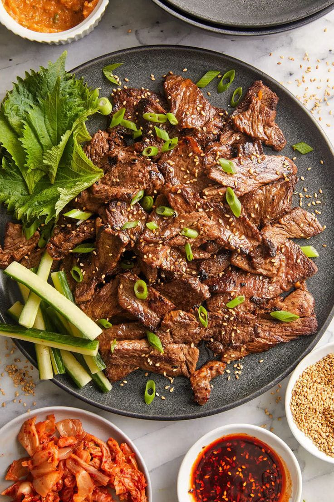
Sweet and savory grilled beef marinated in soy and garlic.
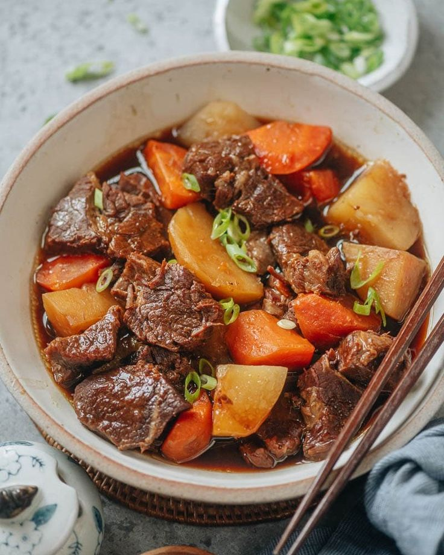
Grilled short ribs — tender and delicious Korean BBQ.
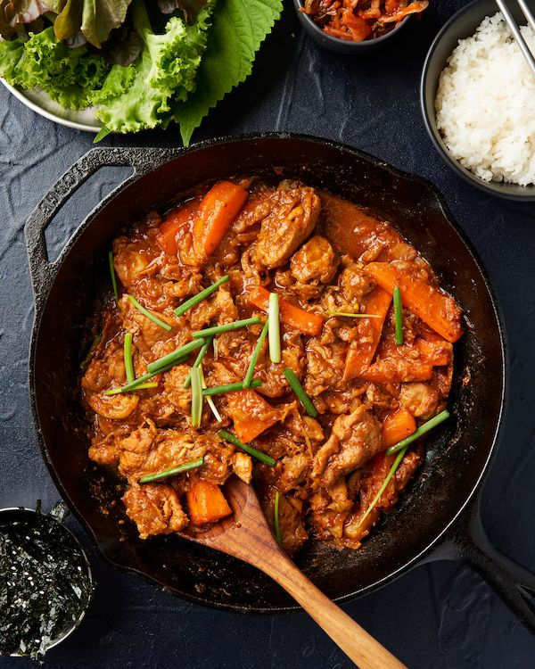
Spicy stir-fried chicken with rice cakes and cabbage.
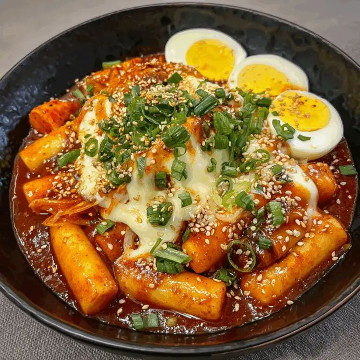
Soft rice cakes in a spicy gochujang sauce — street favorite!
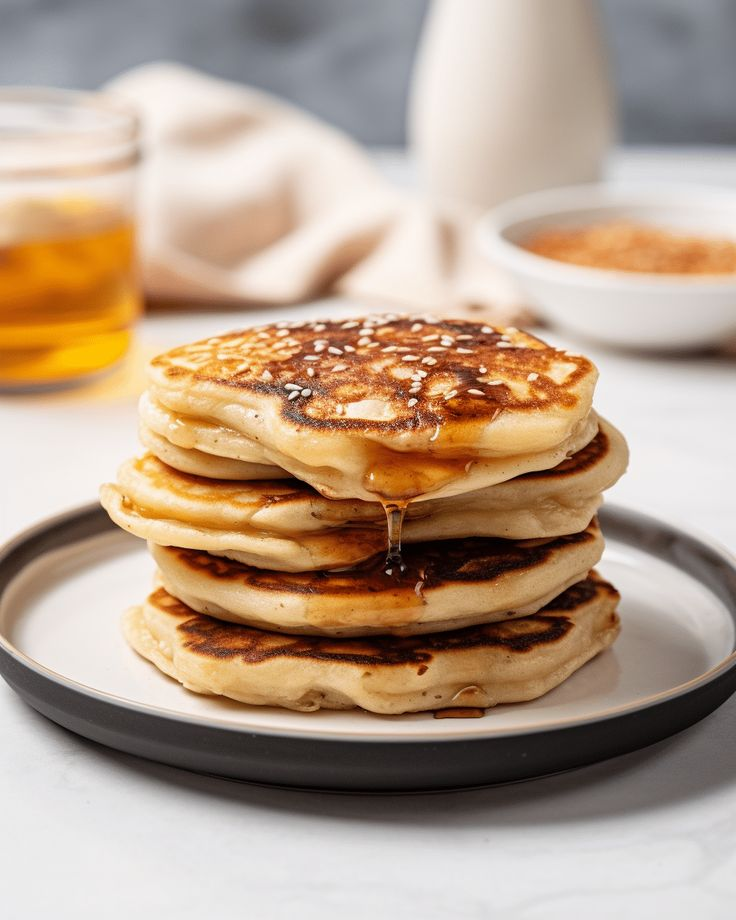
Sweet syrup-filled pancakes — crispy outside, soft inside.
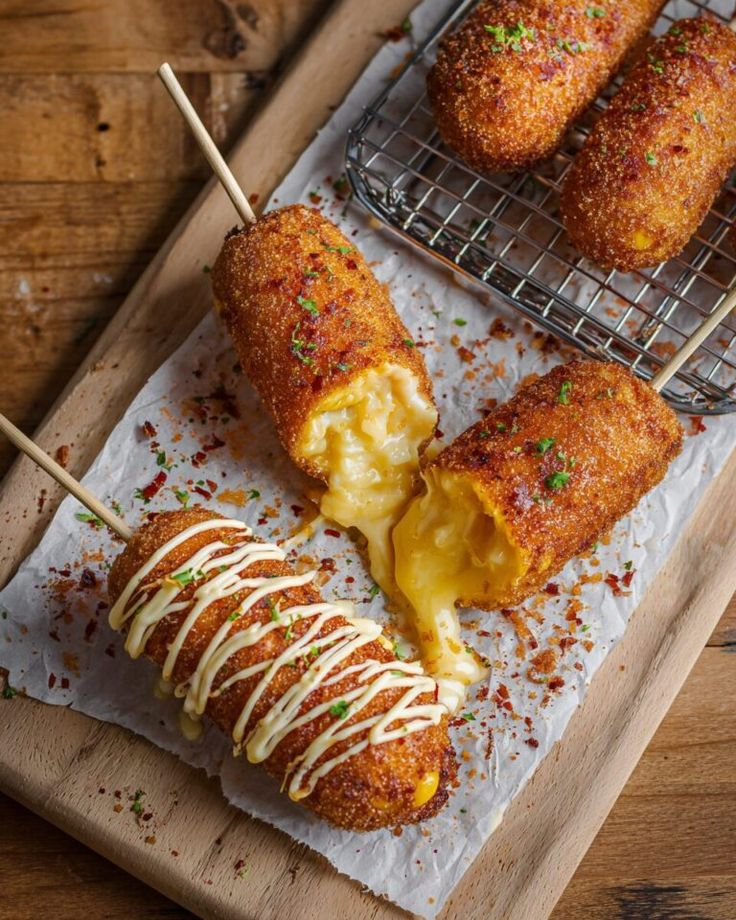
Korean street-style hot dog with crispy batter and cheese.
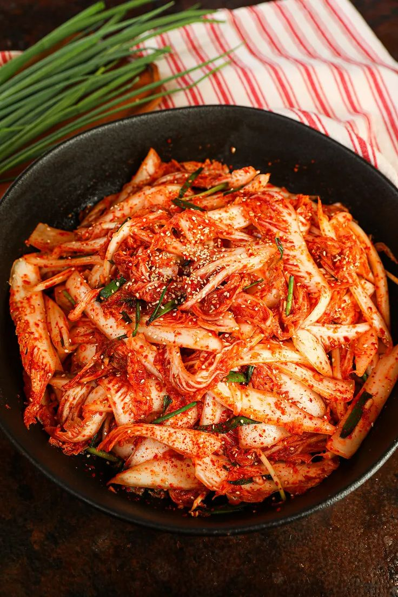
Spicy fermented cabbage — Korea’s heart and soul dish.
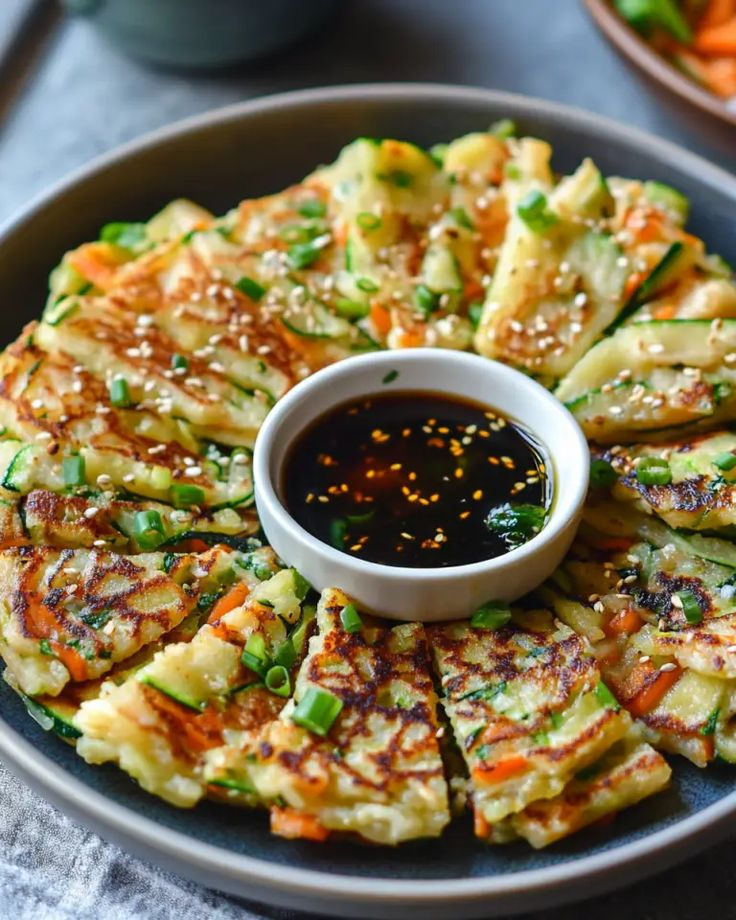
Savory green onion pancake — crispy and delicious.
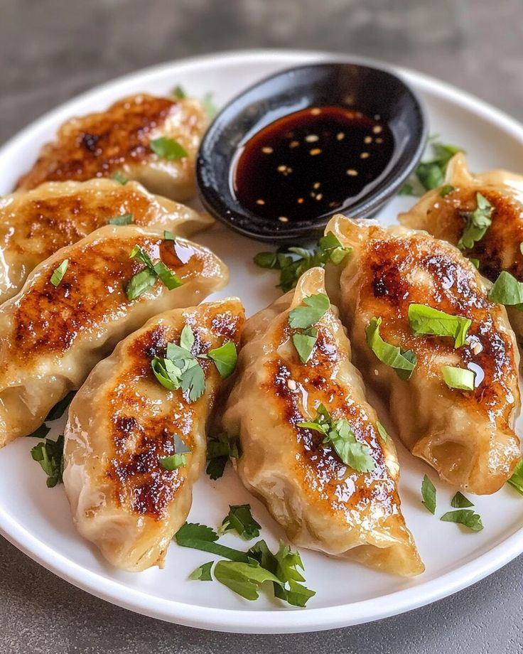
Korean dumplings filled with vegetables or meat.